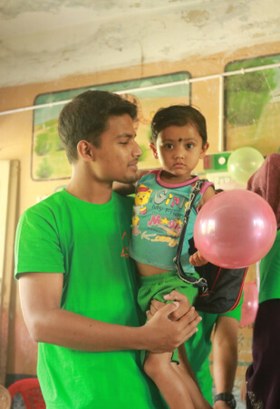

About Dinghy Foundation
Dedicated to creating dignified educational opportunities and climate resilience for coastal families in Satkhira, Bangladesh.

Our Origin Story
Founded by local youth leaders in Kaliganj, Satkhira, Dinghy Foundation was born out of an urgent need to protect children's right to education during extreme weather events and severe coastal poverty.
Starting with a single makeshift classroom, we have grown into a multi-center community organization supporting over 1,250 children and their families across 12 coastal villages.
Mission
To empower low-income coastal communities through inclusive, high-quality education, youth leadership, and holistic climate awareness programs that foster self-reliance and human dignity.
Vision
A resilient, educated, and equitable coastal society where every child reaches their full potential regardless of environmental or economic hardships.
Our Core Values
Community Dignity
We work with local families as active partners, fostering self-reliance rather than dependence.
Uncompromising Transparency
Every donor contribution and project outcome is audited and publicly documented.
Gender & Social Inclusion
Ensuring equal learning access for girls, mothers, and marginalized coastal households.